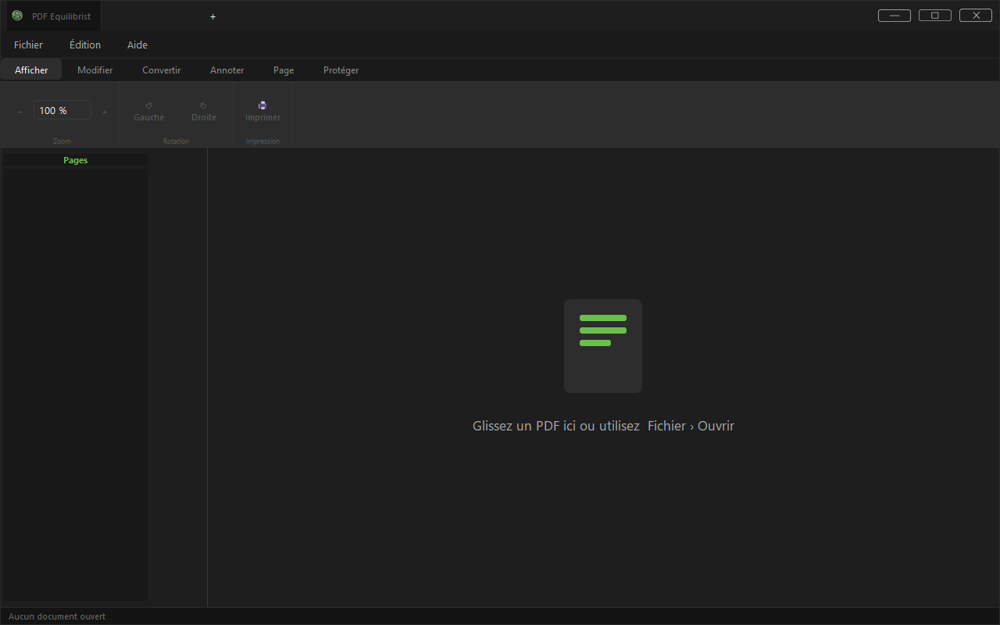

PDF-Equilibrist
Éditeur PDF de bureau, gratuit et open-source, construit en Python avec PyQt6 et PyMuPDF. Il fonctionne entièrement en local — pas de cloud, pas de télémétrie, pas de compte requis.


yay -S pdf-equilibristsudo add-apt-repository ppa:paulwoisard/pdf-equilibrist
sudo apt update
sudo apt install pdf-equilibristsudo dnf copr enable paullux/PDF-Equilibrist
sudo dnf install pdf-equilibrist